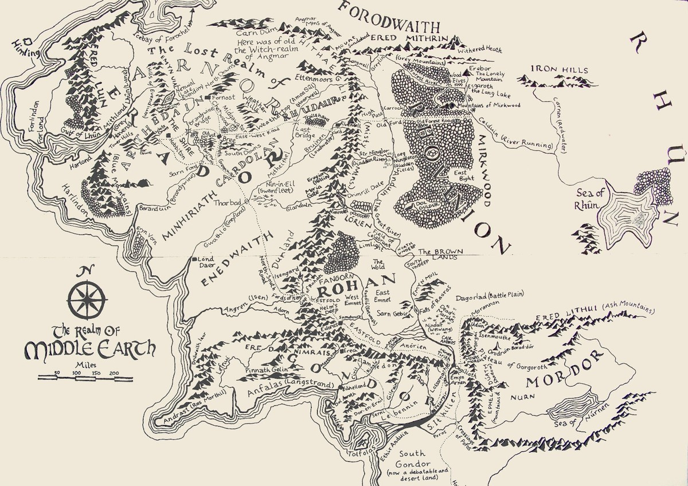

Long before the films, there was a professor in Oxford who loved languages and old stories. J.R.R. Tolkien built an entire world around the tongues he invented, with its own history, maps, peoples and legends. That world is Middle-earth, and its most famous story is The Lord of the Rings, published in the mid-1950s as a trilogy: The Fellowship of the Ring, The Two Towers and The Return of the King.
The story begins quietly in the Shire, a peaceful corner of the world where hobbits care more about good food and a warm fire than about adventure. When Frodo Baggins inherits a mysterious ring from his uncle Bilbo, he learns that it is the One Ring, forged by the Dark Lord Sauron to rule over all other rings of power. To save the world, the ring must be destroyed in the fires of Mount Doom, the only place where it can be unmade, deep inside the enemy’s land of Mordor.
Frodo does not go alone. A fellowship of nine walkers sets out to guard him: four hobbits, two men, an elf, a dwarf and the wizard Gandalf. Along the way they face dark forests, ancient mines, mighty rivers and armies of orcs, and the story follows them as friendships are tested and the group is broken apart. It follows kings and shieldmaidens, the riders of Rohan and the white city of Gondor, all gathering for one last stand against the shadow from the East.
What makes the story last is that its heroes are not the strongest ones. Courage, loyalty and friendship matter more here than swords, and the smallest person in the room may be the one who changes everything. It’s also a story about the pull of power and the cost of carrying a burden too heavy for one person.
In the early 2000s, director Peter Jackson brought the trilogy to the screen, filming across the landscapes of New Zealand, and a new generation fell in love with Middle-earth. Later, The Hobbit films returned to the story of Bilbo, the dwarves of Erebor and the dragon Smaug, which takes place decades before Frodo’s journey.
This site brings together the people of that world. Search for a character, filter by movie, or click on any face to meet them and read one of their words. Whether you know every verse of the Elvish songs or you’re just starting your journey, you’re welcome here.